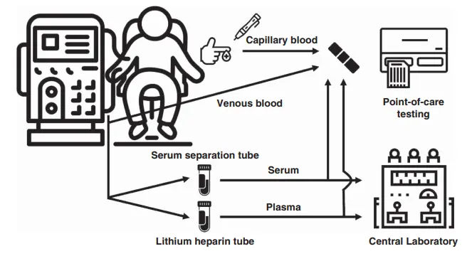

Clinical Evaluation of a Disposable Test Strip for Potassium Level Measurement in Patients Treated with Maintenance Hemodialysis
Clinical Journal of the American Society of Nephrology

Abstract
Background Hyperkalemia is a common electrolyte imbalance leading to an increased risk of serious cardiac dysrhythmias and mortality in patients undergoing hemodialysis. A convenient point-of-care testing (POCT) of potassium levels is considered to improve patient outcomes. However, POCT for potassium level using capillary blood with satisfactory performance is not available.
Methods We tested the performance of disposable test strips for potassium level using various concentrations of potassium solutions with or without interfering electrolytes in an experimental setting. Subsequently, we examined the agreement between potassium levels measured by disposable test strips and those measured by central laboratory equipment using various types of blood samples, including capillary blood obtained by finger prick, in 40 patients undergoing maintenance hemodialysis. In the analysis, Passing-Bablok regression and Bland-Altman analysis were used.
Results Potassium concentrations measured by disposable test strips showed a high degree of agreement with potassium levels achieved using inductively coupled plasma atomic emission spectroscopy. The coefficient of variations for disposable test strips were <5% across potassium concentrations ranging from 2 to 9 mM. Furthermore, potassium levels measured by disposable strips from capillary blood demonstrated a high degree of agreement with potassium levels obtained by central laboratory equipment using serum, showing the slope achieved from Passing-Bablok regression was 1.04 (95% confidence interval, 0.97 to 1.12). Additional analysis with various blood samples also showed similar results.
Conclusions POCT for potassium level using the disposable test strip could be used for self-monitoring of blood potassium levels in clinical practice.